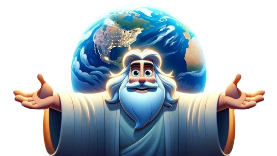

Testemunhe os Momentos Marcantes
Reviva os acontecimentos que moldaram a história bíblica, desde a criação do mundo até a promessa da volta de Cristo.

A Criação do Mundo
O início de tudo, quando Deus criou o céu, a terra e tudo o que neles há.
Leia mais